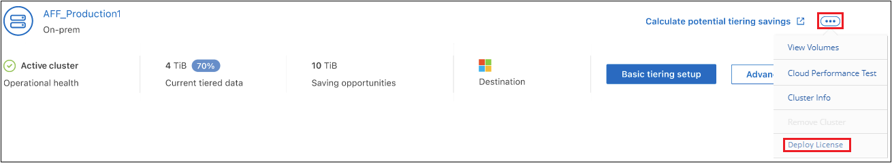

시작하십시오
시작하십시오
BlueXP 계층화에 대한 라이센스를 설정합니다
 변경 제안
변경 제안
첫 번째 클러스터에서 계층화를 설정하면 BlueXP 계층화를 30일 동안 무료로 사용할 수 있습니다. 무료 평가판이 끝나면 클라우드 공급자 마켓플레이스에서 종량제 또는 연간 구독을 통해 BlueXP 계층화에 대한 비용을 지불하거나 NetApp에서 BYOL 라이센스를 받거나 이 둘을 결합하여 비용을 지불해야 합니다.
추가 내용을 읽기 전에 몇 가지 참고 사항을 확인하십시오.
-
클라우드 공급자 시장에서 이미 BlueXP 구독(PAYGO)을 구독한 경우 사내 ONTAP 시스템에 대한 BlueXP 계층화도 자동으로 구독됩니다. BlueXP 계층화 * 온-프레미스 대시보드 * 탭에 활성 서브스크립션이 표시됩니다. 다시 가입하지 않아도 됩니다. BlueXP 디지털 지갑에 활성 구독이 표시됩니다.
-
BYOL BlueXP 계층화 라이센스(이전의 "Cloud Tiering" 라이센스)는 BlueXP 계정의 여러 온-프레미스 ONTAP 클러스터에서 사용할 수 있는 _floating_license입니다. 이는 각 클러스터에 대해 _FabricPool_라이센스를 구입한 과거와 다릅니다(그리고 훨씬 더 쉬움).
-
데이터를 StorageGRID로 계층화할 경우 비용이 발생하지 않으므로 BYOL 라이센스 또는 PAYGO 등록이 필요하지 않습니다. 이러한 계층형 데이터는 라이센스에서 구입한 용량에 포함되지 않습니다.
30일 무료 평가판
BlueXP 계층화 라이센스가 없는 경우 첫 번째 클러스터에 계층화를 설정할 때 BlueXP 계층화를 30일 동안 무료로 체험해 볼 수 있습니다. 30일 무료 평가판이 종료된 후에는 선불 종량제 구독, 연간 구독, BYOL 라이센스 또는 조합을 통해 BlueXP 계층화 비용을 지불해야 합니다.
무료 평가판이 끝나고 라이센스를 구독하거나 추가하지 않은 경우 ONTAP에서는 콜드 데이터를 오브젝트 스토리지에 더 이상 계층화하지 않습니다. 이전에 계층화된 모든 데이터에 계속 액세스할 수 있습니다. 즉, 이 데이터를 검색하고 사용할 수 있습니다. 검색할 경우 데이터가 클라우드에서 성능 계층으로 다시 이동됩니다.
BlueXP 계층화 PAYGO 구독을 사용합니다
클라우드 공급자의 마켓플레이스에서 선불 종량제 구독을 통해 Cloud Volumes ONTAP 시스템 및 BlueXP 계층화와 같은 다양한 클라우드 데이터 서비스의 사용 라이선스를 취득할 수 있습니다.
AWS Marketplace에서 구독
AWS Marketplace에서 BlueXP 계층화를 구독하여 ONTAP 클러스터에서 AWS S3로 데이터를 계층화하기 위한 용량제 구독을 설정합니다.
-
BlueXP에서 * 이동성 > 계층화 > 온-프레미스 대시보드 * 를 클릭합니다.
-
Marketplace subscriptions_section에서 Amazon Web Services 아래의 * Subscribe * 를 클릭한 다음 * Continue * 를 클릭합니다.
-
에서 구독하십시오 "AWS 마켓플레이스 를 참조하십시오"그런 다음 BlueXP 웹 사이트에 다시 로그인하여 등록을 완료합니다.
다음 비디오는 프로세스를 보여 줍니다.
Azure 마켓플레이스에서 구독
Azure Marketplace에서 BlueXP 계층화를 구독하여 ONTAP 클러스터에서 Azure Blob 스토리지까지 데이터 계층화를 위한 용량제 구독을 설정합니다.
-
BlueXP에서 * 이동성 > 계층화 > 온-프레미스 대시보드 * 를 클릭합니다.
-
Marketplace Subscriptions_ 섹션의 Microsoft Azure에서 * Subscribe * 를 클릭한 다음 * Continue * 를 클릭합니다.
-
에서 구독하십시오 "Azure 마켓플레이스 를 참조하십시오"그런 다음 BlueXP 웹 사이트에 다시 로그인하여 등록을 완료합니다.
다음 비디오는 프로세스를 보여 줍니다.
Google Cloud Marketplace를 구독합니다
Google Cloud 마켓플레이스에서 BlueXP 계층화를 구독하여 ONTAP 클러스터에서 Google Cloud 스토리지로 데이터 계층화에 대한 용량제 구독을 설정합니다.
-
BlueXP에서 * 이동성 > 계층화 > 온-프레미스 대시보드 * 를 클릭합니다.
-
Marketplace Subscriptions_ 섹션의 Google Cloud에서 * Subscribe * 를 클릭한 다음 * Continue * 를 클릭합니다.
-
에서 구독하십시오 "Google Cloud 마켓플레이스 를 참조하십시오"그런 다음 BlueXP 웹 사이트에 다시 로그인하여 등록을 완료합니다.
다음 비디오는 프로세스를 보여 줍니다.
연간 계약을 사용합니다
연간 계약을 구매하여 연간 BlueXP 계층화 비용을 지불하십시오. 연간 계약은 1년, 2년 또는 3년 기간으로 제공됩니다.
비활성 데이터를 AWS에 계층화할 때 에서 연간 계약을 구독할 수 있습니다 "AWS 마켓플레이스 페이지를 참조하십시오". 이 옵션을 사용하려면 마켓플레이스 페이지에서 구독을 설정한 다음 "가입 정보를 AWS 자격 증명과 연결합니다".
비활성 데이터를 Azure에 계층화할 때 에서 연간 계약을 구독할 수 있습니다 "Azure 마켓플레이스 페이지". 이 옵션을 사용하려면 마켓플레이스 페이지에서 구독을 설정한 다음 "구독을 Azure 자격 증명에 연결합니다".
Google Cloud로 계층화할 때 연간 계약은 현재 지원되지 않습니다.
BlueXP 계층화 BYOL 라이센스 사용
NetApp에서 제공하는 자체 라이센스는 1년, 2년 또는 3년간 제공됩니다. BYOL * BlueXP 계층화 * 라이센스(이전의 "클라우드 계층화" 라이센스)는 BlueXP 계정의 여러 사내 ONTAP 클러스터에서 사용할 수 있는 _floating_license입니다. BlueXP 계층화 라이센스에 정의된 전체 계층화 용량은 온프레미스 클러스터 * 의 * 전체 * 간에 공유되므로 초기 라이센스와 갱신을 간편하게 수행할 수 있습니다. 계층화 BYOL 라이센스의 최소 용량은 10TiB에서 시작됩니다.
BlueXP 계층화 라이센스가 없는 경우 다음 연락처로 문의해 주십시오.
-
mailto:ng-cloud-tiering@netapp.com?subject=Licensing [라이센스 구매를 위해 이메일 보내기].
-
라이센스를 요청하려면 BlueXP 오른쪽 하단의 채팅 아이콘을 클릭하십시오.
선택적으로 사용하지 않을 Cloud Volumes ONTAP에 대해 할당되지 않은 노드 기반 라이센스가 있는 경우 동일한 달러 당량 및 만료 날짜가 있는 BlueXP 계층화 라이센스로 변환할 수 있습니다. "자세한 내용을 보려면 여기를 클릭하십시오".
BlueXP 디지털 지갑 페이지를 사용하여 BlueXP 계층화 BYOL 라이센스를 관리합니다. 새 라이센스를 추가하고 기존 라이센스를 업데이트할 수 있습니다.
BlueXP 계층화 BYOL 라이센스는 2021년부터 제공됩니다
BlueXP 계층화 서비스를 사용하는 BlueXP 내에서 지원되는 계층화 구성을 위해 2021년 8월에 새로운 * BlueXP 계층화 * 라이센스가 도입되었습니다. 현재 BlueXP는 Amazon S3, Azure Blob 스토리지, Google Cloud Storage, NetApp StorageGRID 및 S3 호환 오브젝트 스토리지로의 계층화를 지원합니다.
이전에 온프레미스 ONTAP 데이터를 클라우드로 계층화하기 위해 사용한 * FabricPool * 라이센스는 ONTAP 인터넷 액세스("다크 사이트")가 없는 사이트와 IBM 클라우드 오브젝트 스토리지로의 계층화 구성에 대해서만 유지됩니다. 이러한 유형의 구성을 사용하는 경우 System Manager 또는 ONTAP CLI를 사용하여 각 클러스터에 FabricPool 라이센스를 설치합니다.

|
StorageGRID로 계층화하려면 FabricPool 또는 BlueXP 계층화 라이센스가 필요하지 않습니다. |
현재 FabricPool 라이센스를 사용 중인 경우 FabricPool 라이센스가 만료 날짜 또는 최대 용량에 도달할 때까지 영향을 받지 않습니다. 라이센스를 업데이트해야 하는 경우 또는 그 이전에 데이터를 클라우드로 계층화할 수 있는 기능이 중단되지 않도록 NetApp에 문의하십시오.
-
BlueXP에서 지원되는 구성을 사용하는 경우 FabricPool 라이센스가 BlueXP 계층화 라이센스로 변환되고 BlueXP 디지털 지갑에 표시됩니다. 초기 라이센스가 만료되면 BlueXP 계층화 라이센스를 업데이트해야 합니다.
-
BlueXP에서 지원되지 않는 구성을 사용하는 경우 FabricPool 라이센스를 계속 사용할 수 있습니다. "System Manager를 사용하여 계층화의 라이선스를 취득하는 방법을 알아보십시오".
다음은 두 라이센스에 대해 알아야 할 몇 가지 사항입니다.
| BlueXP 계층화 라이센스 | FabricPool 라이센스 |
|---|---|
여러 온프레미스 ONTAP 클러스터에서 사용할 수 있는 _floating_license입니다. |
every_cluster에 대해 구입하고 라이센스를 부여하는 클러스터 단위 라이센스입니다. |
BlueXP 디지털 지갑에 등록되어 있습니다. |
System Manager 또는 ONTAP CLI를 사용하여 개별 클러스터에 적용됩니다. |
계층화 구성 및 관리는 BlueXP의 BlueXP 계층화 서비스를 통해 수행됩니다. |
계층화 구성 및 관리는 System Manager 또는 ONTAP CLI를 통해 수행됩니다. |
구성이 완료되면 무료 평가판을 사용하여 30일 동안 라이센스 없이 계층화 서비스를 사용할 수 있습니다. |
구성이 완료되면 처음 10TB의 데이터를 무료로 계층화할 수 있습니다. |
BlueXP 계층화 라이센스 파일을 얻습니다
BlueXP 계층화 라이센스를 구매한 후에는 BlueXP 계층화 일련 번호 및 NSS 계정을 입력하거나 NLF 라이센스 파일을 업로드하여 BlueXP에서 라이센스를 활성화합니다. 아래 단계에서는 NLF 라이센스 파일을 가져오는 방법을 보여 줍니다(해당 방법을 사용하려는 경우).
시작하기 전에 다음 정보가 필요합니다.
-
BlueXP 계층화 일련 번호
판매 주문에서 이 번호를 찾거나 계정 팀에 문의하여 이 정보를 확인하십시오.
-
BlueXP 계정 ID
BlueXP의 상단에서 * 계정 * 드롭다운을 선택한 다음 계정 옆의 * 계정 관리 * 를 클릭하여 BlueXP 계정 ID를 찾을 수 있습니다. 계정 ID는 개요 탭에 있습니다.
-
에 로그인합니다 "NetApp Support 사이트" 시스템 > 소프트웨어 라이센스 * 를 클릭합니다.
-
BlueXP 계층화 라이센스 일련 번호를 입력합니다.

-
라이센스 키 * 열에서 * NetApp 라이센스 파일 가져오기 * 를 클릭합니다.
-
BlueXP 계정 ID(지원 사이트에서 테넌트 ID라고 함)를 입력하고 * 제출 * 을 클릭하여 라이센스 파일을 다운로드합니다.

BlueXP 계층화 BYOL 라이센스를 계정에 추가합니다
BlueXP 계정에 대한 BlueXP 계층화 라이센스를 구입한 후 BlueXP 계층화 서비스를 사용하려면 BlueXP에 라이센스를 추가해야 합니다.
-
Governance > Digital Wallet > Data Services Licenses * 를 클릭합니다.
-
라이선스 추가 * 를 클릭합니다.
-
Add License_대화 상자에서 라이센스 정보를 입력하고 * Add License * 를 클릭합니다.
-
계층화 라이선스 일련 번호가 있고 NSS 계정을 알고 있는 경우 * 일련 번호 입력 * 옵션을 선택하고 해당 정보를 입력합니다.
드롭다운 목록에서 NetApp Support 사이트 계정을 사용할 수 없는 경우 "NSS 계정을 BlueXP에 추가합니다".
-
계층화 라이센스 파일이 있는 경우 * 라이센스 파일 업로드 * 옵션을 선택하고 표시되는 메시지에 따라 파일을 첨부합니다.

-
BlueXP는 BlueXP 계층화 서비스가 활성화되도록 라이센스를 추가합니다.
BlueXP 계층화 BYOL 라이센스 업데이트
라이센스가 부여된 기간이 만료일이 다가오고 있거나 라이센스가 부여된 용량이 한도에 도달한 경우 BlueXP 계층화에 알림이 표시됩니다.

이 상태는 BlueXP 디지털 지갑 페이지에도 표시됩니다.

BlueXP 계층화 라이센스가 만료되기 전에 업데이트하여 데이터를 클라우드에 계층화하는 기능이 중단되지 않도록 할 수 있습니다.
-
BlueXP의 오른쪽 하단에 있는 채팅 아이콘을 클릭하여 특정 일련 번호에 대한 BlueXP 계층화 라이센스의 기간 연장 또는 추가 용량을 요청합니다.
라이센스 비용을 지불하고 NetApp Support 사이트에 등록한 후 BlueXP는 BlueXP 디지털 지갑의 라이센스를 자동으로 업데이트하고 데이터 서비스 라이센스 페이지에 변경 내용이 5-10분 내에 반영됩니다.
-
BlueXP에서 라이센스를 자동으로 업데이트할 수 없는 경우 라이센스 파일을 수동으로 업로드해야 합니다.
-
BlueXP 디지털 전자지갑의 _Data Services Licenses_탭에서 를 클릭합니다
 업데이트하는 서비스 일련 번호에 대해 * Update License * 를 클릭합니다.
업데이트하는 서비스 일련 번호에 대해 * Update License * 를 클릭합니다.
-
Update License_page에서 라이센스 파일을 업로드하고 * Update License * 를 클릭합니다.
BlueXP는 라이센스를 업데이트하여 BlueXP 계층화 서비스를 계속 활성화합니다.
특수한 구성의 클러스터에 BlueXP 계층화 라이센스 적용
다음 구성의 ONTAP 클러스터는 BlueXP 계층화 라이센스를 사용할 수 있지만, 라이센스는 단일 노드 클러스터, HA 구성 클러스터, 계층화 미러 구성의 클러스터, FabricPool 미러를 사용한 MetroCluster 구성과 다른 방식으로 적용되어야 합니다.
-
IBM Cloud Object Storage로 계층화된 클러스터
-
"다크 사이트"에 설치된 클러스터
FabricPool 라이센스가 있는 기존 클러스터에 대한 프로세스입니다
언제 "BlueXP 계층화에서 이러한 특수 클러스터 유형을 모두 확인해 보십시오"BlueXP 계층화는 FabricPool 라이센스를 인식하고 BlueXP 디지털 지갑에 라이센스를 추가합니다. 이러한 클러스터는 평소와 같이 데이터를 계속 계층화합니다. FabricPool 라이센스가 만료되면 BlueXP 계층화 라이센스를 구입해야 합니다.
새로 생성된 클러스터에 대한 프로세스입니다
BlueXP 계층화의 일반적인 클러스터를 검색할 때 BlueXP 계층화 인터페이스를 사용하여 계층화를 구성합니다. 이러한 경우 다음과 같은 동작이 발생합니다.
-
"상위" BlueXP 계층화 라이센스는 모든 클러스터가 계층화에 사용하는 용량을 추적하여 라이센스에 충분한 용량이 있는지 확인합니다. 총 라이센스 용량과 유효 기간은 BlueXP 디지털 지갑에 나와 있습니다.
-
"하위" 계층화 라이센스가 각 클러스터에 자동으로 설치되어 "상위" 라이센스와 통신합니다.

|
System Manager 또는 ONTAP CLI에서 "하위" 라이센스에 대한 라이센스 용량 및 만료 날짜가 실제 정보가 아니므로 정보가 동일하지 않을 수 있습니다. 이러한 값은 BlueXP 계층화 소프트웨어에서 내부적으로 관리됩니다. 실제 정보는 BlueXP 디지털 지갑에서 추적할 수 있습니다. |
위에 나열된 두 가지 구성의 경우, 시스템 관리자 또는 ONTAP CLI(BlueXP 계층화 인터페이스를 사용하지 않음)를 사용하여 계층화를 구성해야 합니다. 따라서 이러한 경우에는 BlueXP 계층화 인터페이스에서 이러한 클러스터에 "하위" 라이센스를 수동으로 푸시해야 합니다.
데이터가 계층화 미러 구성을 위해 서로 다른 두 오브젝트 스토리지 위치로 계층화되므로 데이터를 두 위치로 계층화할 수 있는 충분한 용량의 라이센스를 구입해야 합니다.
-
시스템 관리자 또는 ONTAP CLI를 사용하여 ONTAP 클러스터를 설치 및 구성합니다.
이 시점에서는 계층화를 구성하지 마십시오.
-
"BlueXP 계층화 라이센스를 구입합니다" 새 클러스터 또는 클러스터에 필요한 용량
-
BlueXP의 경우 "BlueXP 디지털 지갑에 라이센스를 추가합니다".
-
BlueXP 계층화에서는 "새로운 클러스터를 만나보세요".
-
클러스터 페이지에서 을 클릭합니다
클러스터에 대해 * 라이선스 배포 * 를 선택합니다.
-
Deploy License_대화상자에서 * deploy * 를 클릭합니다.
하위 라이센스가 ONTAP 클러스터에 배포됩니다.
-
시스템 관리자 또는 ONTAP CLI로 돌아가서 계층화 구성을 설정하십시오.